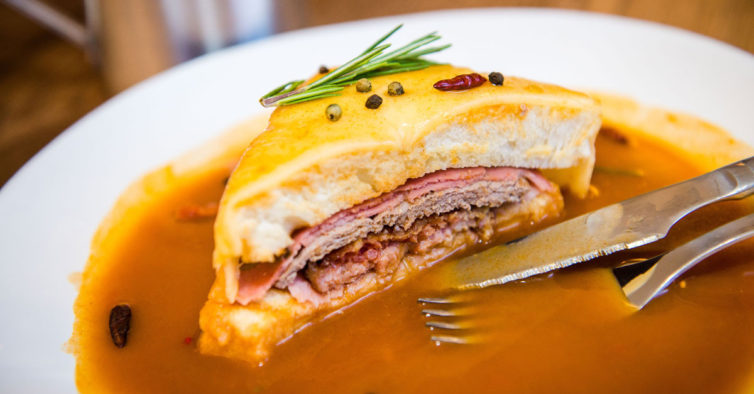

Vegetarian Francesinha

Description
Like a Portuguese version of a Croque Monsieur, only with far more meat and a tomatoey, beery sauce which you can spice up with some chilli, if preferred. Belly busting and described as a 'heart attack on a plate', this is a food that is local to Porto and made in a few different ways.
As the boyfriend is vegetarian and I really wanted him to try this portuguese delicacy we compromised on a vegetarian version for him and a "bursting with meat" version for myself.
Ingredients
- 2 vegan sausages
- 2 vegan smoked sausages
- 2 vegan burgers
- 4 slices bread (stale is perfect)
- 10 slices any preferred melty cheese
- 4 slices vegan ham
- 2 eggs
- francesinha sauce
Steps
- Sandwich filling: Cut the vegan sausages lengthwise and season with salt and pepper. Season the vegan burgers as well. Grill the vegan sausages first and then the vegan burgers.
- Start shaping the francesinha: first a slice of bread, then one slice of cheese, one of vegan ham, the burgers, the vegan sausages; layering between the two sandwiches until the "meat" is used up between them and you have a sandwich. Cover all of the sandwiches with the remaining sliced cheese and bung in the oven or grill until it melts.
- Once the cheese is melted, fry the eggs and top the sandwiches with them and pour the hot sauce over and around. Serve with fries.